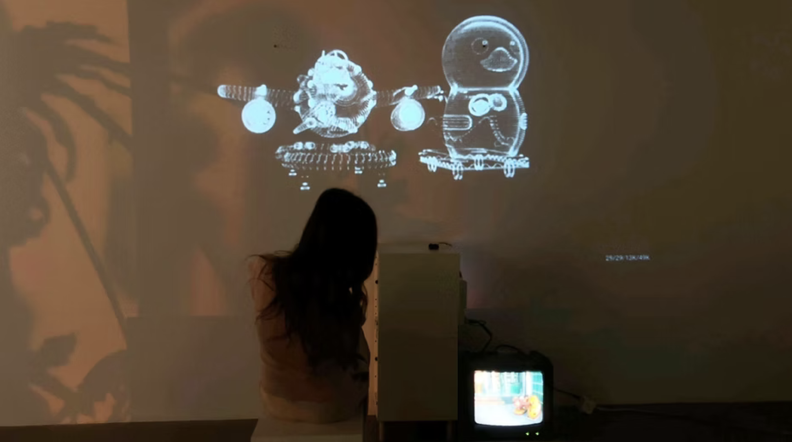

Touching
Memories
An interactive installation exploring collective childhood memories. Personal project, 2024.
Touching Memories in Motion
Project Introduction
Touching Memories is an interactive digital art installation exploring the idea that people from similar cultural and social backgrounds often share recognizable childhood memories.
Visitors interact with nostalgic physical objects connected to distance sensors. Their gestures influence a projected particle system, which gradually transforms into images and animated 3D scenes based on shared memories of childhood bedrooms, classrooms, and neighborhood supermarkets.
I designed the concept, research process, visitor flow, 3D environments, TouchDesigner visuals, sensor interaction, and gallery experience as one connected installation.
Project Overview
Touching Memories began with a question: why do people who grew up in similar cultural environments often remember the same objects, spaces, and routines?
The installation turns these shared memories into an interactive experience. Visitors approach familiar childhood objects, and their gestures gradually reveal visual memories through projected particles and 3D animation.
From Personal Memory to Shared Memory
The project was inspired by the idea that everyday childhood objects can hold both personal and collective meaning.
I created an anonymous questionnaire using familiar objects from my own generation and cultural background. Participants described the memories, spaces, and emotions they associated with each object.
Many responses repeated similar details, including room layouts, school furniture, neighborhood stores, toys, books, household objects, and daily routines. These patterns became the foundation for the installation's three memory scenes.


Childhood Memory References
Designing the Visitor Journey
The installation was designed as a guided gallery experience rather than a single screen interaction.
Each memory station includes:
As visitors approach an object, the sensor detects their movement and the particle system changes its flow. Continued interaction gradually reveals a memory image; once recognizable, the corresponding animated scene activates.

Gallery Experience and Visitor Flow
How the System Works
The sensor, particle system, and 3D environments work together as one continuous interaction loop.
The visitor approaches a nostalgic object.
The distance sensor measures the visitor's gesture.
Sensor data is sent to TouchDesigner.
The particle field changes its flow and density.
The particles gradually form a recognizable image.
The completed image triggers a corresponding scene animation.

Interaction System Diagram
Three Memory Worlds
Each scene was built around recurring details gathered from the questionnaire. The three environments represent the spaces that appeared most frequently across participant responses.
Neighborhood Supermarket
The supermarket scene was inspired by neighborhood stores that appeared frequently in responses — connected to familiar signs, daily routines, coin-operated rides, and family life. I translated these shared details into a modeled environment and particle interaction.


Supermarket Environment Model and Modeling Development

Particle Interaction Test
Classroom
The classroom scene focused on details that appeared repeatedly in shared school memories, including wooden desks, chalkboards, metal lecterns, and the atmosphere of older classrooms.
The environment was designed to feel familiar without recreating one specific school.


Classroom Modeling Process and TouchDesigner Test
Childhood Bedroom
The bedroom scene was based on recurring memories of childhood homes and living spaces.
Common details included warm wooden furniture, desks, bookshelves, corner cabinets, water bottles, electric fans, alarm clocks, and favorite toys. I used these repeated details to create a scene that felt personally familiar while still reflecting a shared visual memory.


Bedroom Scene Development and Modeling Process
Building the Particle Interaction
The projected particle system acts as the visual bridge between an abstract memory and a recognizable image.
At the start, the particles appear scattered and unstable. As the visitor moves closer, sensor data changes their movement in real time until they gradually form a recognizable image.
Gradual Transformation
The particles move from scattered and unstable to organized and recognizable, giving the visitor a sense of gradual discovery.
Visitor Response
Particle behavior changes directly in response to the visitor's movement, making proximity and gesture the primary interaction.
Image to Animation
Once the particle image becomes fully recognizable, it connects to the corresponding 3D animated scene on the vintage television.
Connecting Physical Objects and Digital Memory
The distance sensor turns the visitor's movement into live visual input.
As the visitor approaches the memory object, TouchDesigner receives changing distance values and uses them to control the flow, density, and organization of the projected particles.
The visitor approaches a memory object.
The sensor measures distance.
TouchDesigner receives the sensor data.
Particle behavior changes in real time.
A memory image gradually appears.
The final image connects to the animated 3D scene.
Distance Sensor and TouchDesigner Test
Preparing the Installation
The installation required the nostalgic objects, sensors, projected particles, television animations, and visitor flow to work together in one physical space.
I tested the placement of each memory station, sensor range, projected image scale, and the relationship between the main projection and the vintage television.
Sensor Reliability
Testing sensor range and response consistency across different visitor distances and movement speeds.
Projection Alignment
Calibrating projected image scale and position relative to each memory station and the gallery walls.
Visitor Flow
Arranging object placement and station spacing to guide visitors through each memory in a natural sequence.
- Scene transition timing and particle response calibration
- Visibility and legibility of the television animation
- Object placement and spatial composition within the gallery
Installation Showcase
The final experience invited visitors to discover shared memories through movement.
A nostalgic object introduced each memory. The projected particles responded to the visitor, and the completed transformation revealed a corresponding animated scene on the television.
Research, spatial design, 3D modeling, real-time visuals, and physical interaction came together in one continuous experience.
Final Gallery Television Experience
What This Project Taught Me
01
Interaction Can Reveal Emotion
The visitor does not receive the memory immediately. The gradual particle transformation creates anticipation and makes recognition feel earned through interaction.
02
Familiar Objects Can Build Shared Worlds
Small everyday objects can carry strong cultural and emotional meaning. This project taught me how personal references can become part of a wider interactive experience when patterns are identified through research.
03
Technology Should Support the Idea
The sensor, particles, 3D scenes, projection, and television were not separate technical experiments. Each element needed to support the central experience of uncovering a memory.